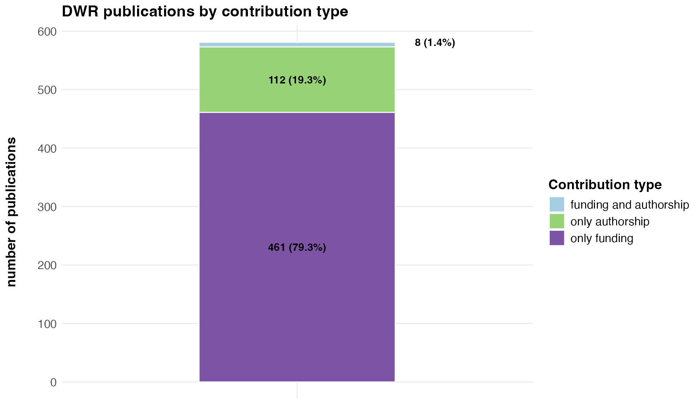
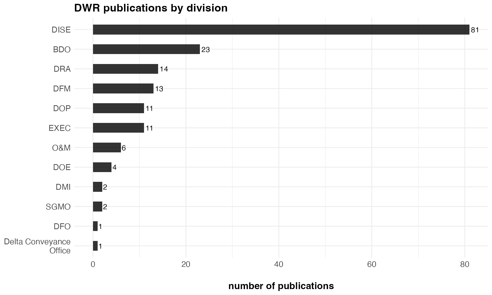
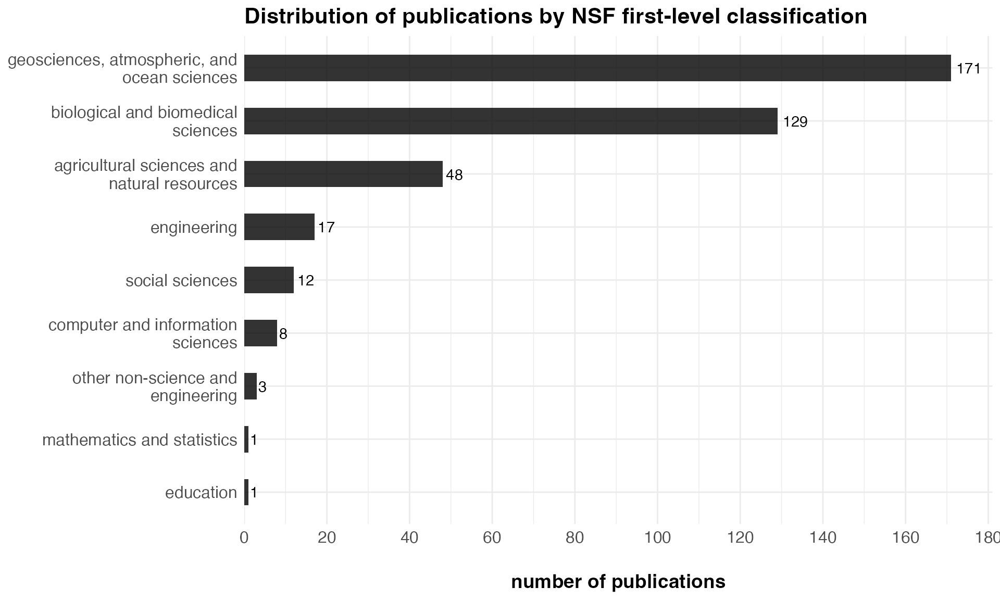
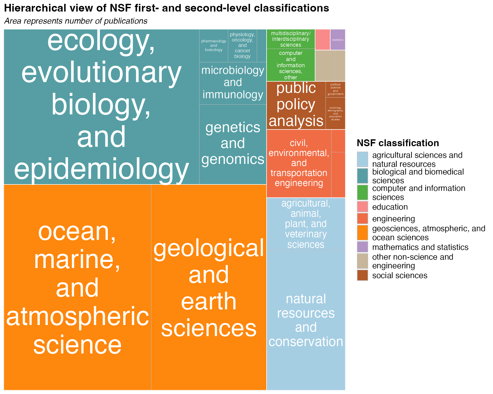
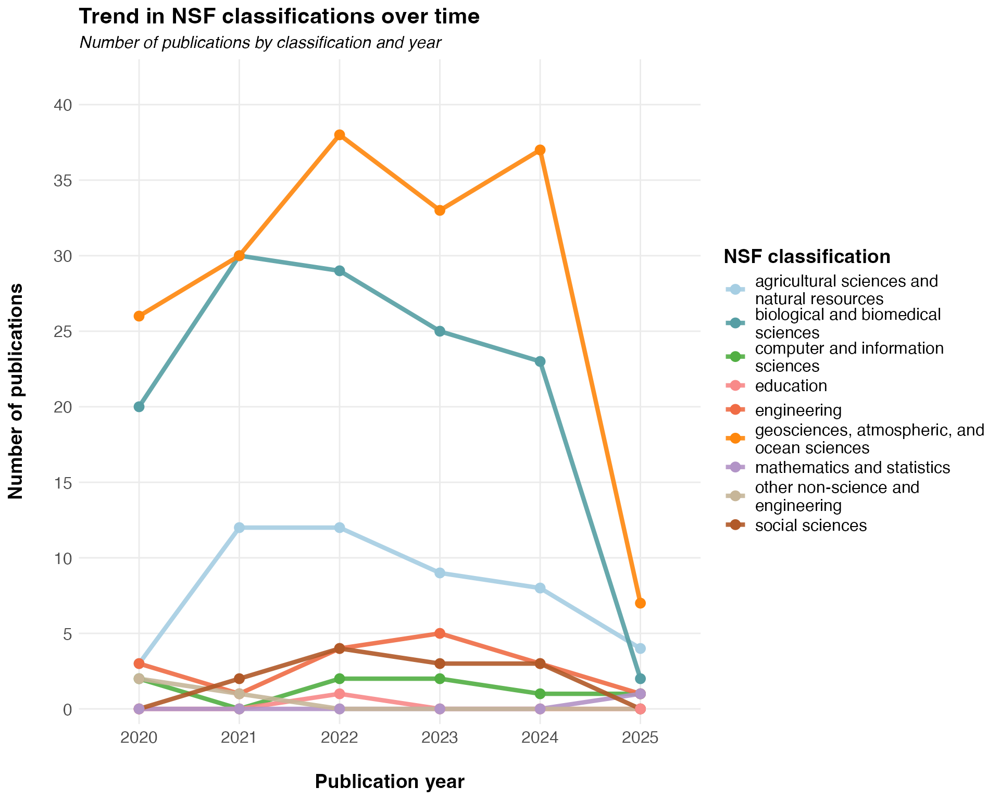

DWR Publication Classification using an LLM
Source:vignettes/classify_dwr_pubs.Rmd
classify_dwr_pubs.RmdIntroduction
The California Department of Water Resources (DWR) has developed a method for classifying peer-reviewed publications to which DWR has contributed authorship and/or funded. The classification is performed with a large language model (LLM).
DWR publication inventory
DWR has built an inventory of peer-reviewed publications from 2020 to the present using three techniques:
- A call to the Crossref API using the general search query term “California Department of Water Resources” and a publication date filter of January 1, 2020 or later
- A call to the Crossref API using DWR’s unique funder identifier and a publication date filter of January 1, 2020 or later
- A call to the Crossref API using a list of digital object identifiers (DOIs) that the California Energy Commission librarian has produced
The these calls produced an inventory that contains 581 unique peer-reviewed articles. Here are the first eight entries in the inventory:
Trask, James C., Scott M. Devine, and Graham E. Fogg. 2020. “Soil temperature survey in a mountain basin.” Geoderma 367: 114202 doi:10.1016/j.geoderma.2020.114202
Anderson, Michael. 2020. “Jim Goodridge Memorial.” Journal of Applied and Service Climatology 2020, no. 2. doi:10.46275/joasc.2020.01.002
Wickham, Patrick et al. 2020. “UV light and temperature induced fluridone degradation in water and sediment and potential transport into aquifer.” Environmental Pollution 265: 114750 doi:10.1016/j.envpol.2020.114750
Sommer, Ted et al. 2020. “Evaluation of a large-scale flow manipulation to the upper San Francisco Estuary: Response of habitat conditions for an endangered native fish.” PLOS ONE 15, no. 10: e0234673 doi:10.1371/journal.pone.0234673
Herbold, Bruce et al. 2020. “In Honor of Dr. Larry R. Brown.” San Francisco Estuary and Watershed Science 19, no. 2. doi:10.15447/sfews.2021v19iss2art1
Jeffres, Carson A. et al. 2020. “Detrital food web contributes to aquatic ecosystem productivity and rapid salmon growth in a managed floodplain.” PLOS ONE 15, no. 9: e0216019 doi:10.1371/journal.pone.0216019
Switanek, Matthew B. et al. 2020. “Present and Past Sea Surface Temperatures: A Recipe for Better Seasonal Climate Forecasts.” Weather and Forecasting 35, no. 4: 1221-1234 doi:10.1175/waf-d-19-0241.1
Avanzi, Francesco et al. 2020. “Information content of spatially distributed ground-based measurements for hydrologic-parameter calibration in mixed rain-snow mountain headwaters.” Journal of Hydrology 582: 124478 doi:10.1016/j.jhydrol.2019.124478
The peer-reviewed article inventory includes full abstract text, where available. For example, here is the abstract associated with the Switanek et al. (2020) publication:
Monthly tropical sea surface temperature (SST) data are used as predictors to make statistical forecasts of cold season (November–March) precipitation and temperature for the contiguous United States. Through the use of the combined-lead sea surface temperature (CLSST) model, predictive information is discovered not just in recent SSTs but also from SSTs up to 18 months prior. We find that CLSST cold season forecast anomaly correlation skill is higher than that of the North American Multimodel Ensemble (NMME) and the SEAS5 model from the European Centre for Medium-Range Weather Forecasts (ECMWF) when averaged over the United States for both precipitation and 2-m air temperature. The precipitation forecast skill obtained by CLSST in parts of the Intermountain West is of particular interest because of its implications for water resources. In those regions, CLSST dramatically improves the skill over that of the dynamical model ensembles, which can be attributed to a robust statistical response of precipitation in this region to SST anomalies from the previous year in the tropical Pacific.
DWR role
DWR serves two roles in the publications listed in this inventory: authorship and funding. Sometimes, DWR contributes both to a single publication. Most of DWR’s contributions come in the form of funding.

Division author contributions
In the case of DWR authorship, publications were assigned a DWR division based on the divisional affiliation of the highest-ranking author. To add the division information, author names were fuzzy-matched with a roster of all employees, divisions, and years since 2020. DWR authors are spread across 13 divisions. The division that has published the greatest number of manuscripts is DISE

Large language model classification
The publication classification is performed using Google’s Gemini
large language model. The function classify_pubs_gemini()
sends each abstract to the model along with a system prompt that
instructs the model on how to perform the classification.
Here is the system prompt used for classification:
You are an expert classifier who works for the National Science Foundation (NSF).
I am uploading a file containing the complete NSF fields-of-study taxonomy.
Please load that CSV into memory and use it to classify any abstracts I send.
When I send an abstract, reply ONLY with JSON containing: doi, first_level,
second_level, and third_level (matching exactly the taxonomy values).
Do not wrap output in markdown or code fences or add any extra text.
The National Science Foundation (NSF) classification system referenced in the system prompt is used for the annual NSF Survey of Earned Doctorates (SED). The most recent version of the SED taxonomy is described here.
Here is an example of elements in the taxonomy.
| First-level classification | Second-level classification | Third-level classification |
|---|---|---|
| agricultural sciences and natural resources | agricultural, animal, plant, and veterinary sciences | agronomy and crop science |
| agricultural sciences and natural resources | agricultural, animal, plant, and veterinary sciences | animal sciences |
| agricultural sciences and natural resources | agricultural, animal, plant, and veterinary sciences | food science and technology |
| agricultural sciences and natural resources | agricultural, animal, plant, and veterinary sciences | plant sciences |
| agricultural sciences and natural resources | agricultural, animal, plant, and veterinary sciences | soil sciences |
| agricultural sciences and natural resources | agricultural, animal, plant, and veterinary sciences | veterinary biomedical and clinical sciences |
| agricultural sciences and natural resources | agricultural, animal, plant, and veterinary sciences | agricultural, animal, plant, and veterinary sciences nec |
| agricultural sciences and natural resources | natural resources and conservation | environmental science |
| agricultural sciences and natural resources | natural resources and conservation | environmental/natural resources management and policy |
| agricultural sciences and natural resources | natural resources and conservation | forestry |
Each abstract was fed to the Google Gemini 2.0 Flash large language model (LLM), a cost-efficient, non-thinking model with a knowledge cutoff of June 2024. The LLM produced a three-level NSF classification for each article.
| Article | First-level classification | Second-level classification | Third-level classification |
|---|---|---|---|
| Switanek, Matthew B. et al. (2020). Present and Past Sea Surface Temperatures: A Recipe for Better Seasonal Climate Forecasts | geosciences, atmospheric, and ocean sciences | ocean, marine, and atmospheric science | atmospheric sciences and meteorology, general |
| Ghalambor, Cameron et al. (2020). Ecological Effects of Climate-Driven Salinity Variation in the San Francisco Estuary: Can We Anticipate and Manage the Coming Changes? | geosciences, atmospheric, and ocean sciences | ocean, marine, and atmospheric science | marine sciences |
| Bolotaolo, Melissa et al. (2020). Analysis of Covalently Bound Microcystins in Sediments and Clam Tissue in the Sacramento–San Joaquin River Delta, California, USA | biological and biomedical sciences | pharmacology and toxicology | toxicology |
| Croston, Rebecca et al. (2020). Timing, frequency, and duration of incubation recesses in dabbling ducks | biological and biomedical sciences | ecology, evolutionary biology, and epidemiology | ecology |
| Cao, Qian et al. (2020). Floods due to Atmospheric Rivers along the U.S. West Coast: The Role of Antecedent Soil Moisture in a Warming Climate | geosciences, atmospheric, and ocean sciences | geological and earth sciences | hydrology and water resources science |
| Acuña, Shawn et al. (2020). Determining the Exposure Pathway and Impacts of <i>Microcystis</i> on Threadfin Shad, <i>Dorosoma petenense</i>, in San Francisco Estuary | biological and biomedical sciences | pharmacology and toxicology | toxicology |
| Gibson, Peter B. et al. (2020). Ridging Associated with Drought across the Western and Southwestern United States: Characteristics, Trends, and Predictability Sources | geosciences, atmospheric, and ocean sciences | ocean, marine, and atmospheric science | atmospheric sciences and meteorology, general |
| Montazar, Aliasghar et al. (2020). Determination of Actual Evapotranspiration and Crop Coefficients of California Date Palms Using the Residual of Energy Balance Approach | agricultural sciences and natural resources | agricultural, animal, plant, and veterinary sciences | agronomy and crop science |
| Baerwald, Melinda R. et al. (2020). Rapid and accurate species identification for ecological studies and monitoring using CRISPR‐based SHERLOCK | biological and biomedical sciences | genetics and genomics | genome sciences and genomics |
| He, Minxue et al. (2020). Emulation of a Process-Based Salinity Generator for the Sacramento–San Joaquin Delta of California via Deep Learning | engineering | civil, environmental, and transportation engineering | environmental/environmental health engineering |
Classification visualizations
Since 2020, DWR has published the most papers in the first-level classification of geosciences, atmospheric, and ocean sciences (171 papers), followed by biological and biomedical sciences (129 papers). Only a handful of papers have been published in other non-science and engineering; education; and mathematics and statistics.

Drilling down one level further in the classification, we can see that many papers have been published that address ecology, evolutionary biology, and epidemiology (96 papers), ocean, marine, and atmospheric science (96 papers), and geological and earth sciences (75 papers).

Total DWR publications rose from 99 in 2020 to a peak of 136 in 2022. The two leading fields—geosciences, atmospheric, and ocean sciences and biological and biomedical sciences—have variable counts of publications per year, reflecting ebbs and flows in scientific work, likely due to the impacts of COVID-19 in this analysis window. Smaller topics such as social sciences, and mathematics and statistics, with no more than 4 papers in any year, remain relatively flat over the period.
